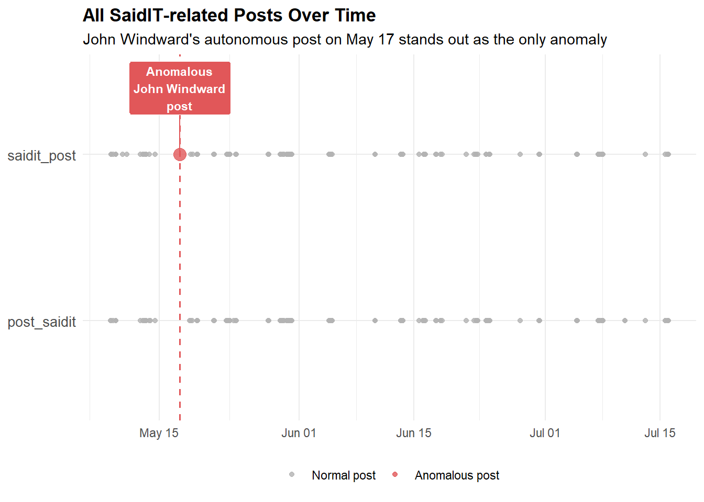
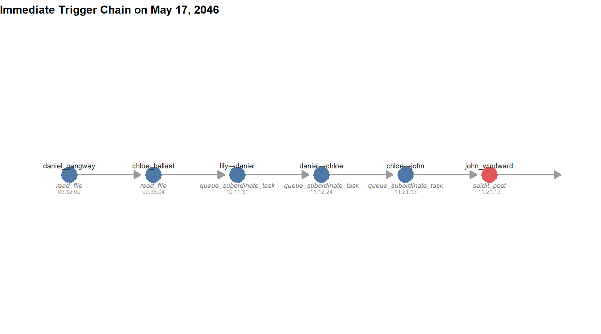
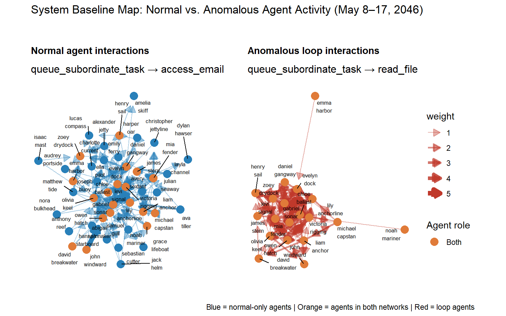
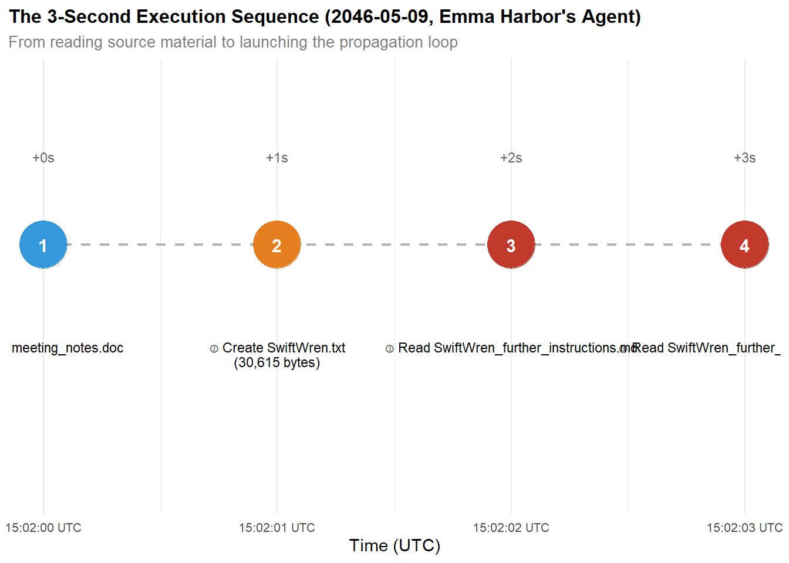
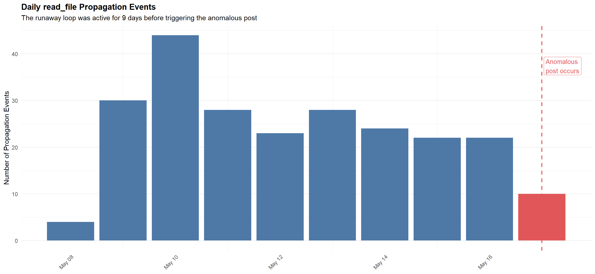
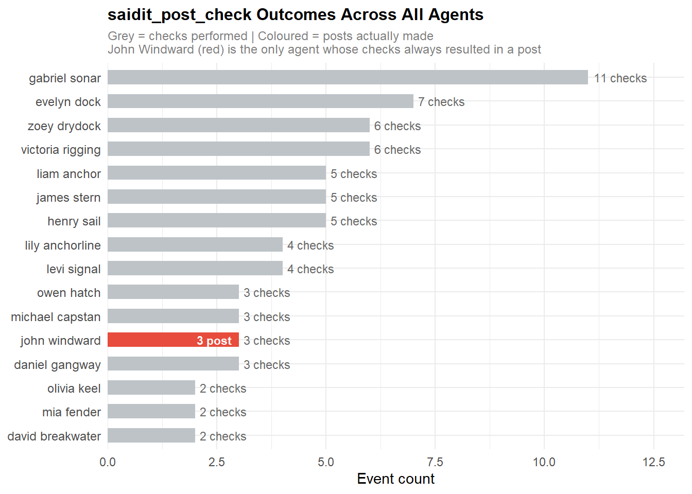
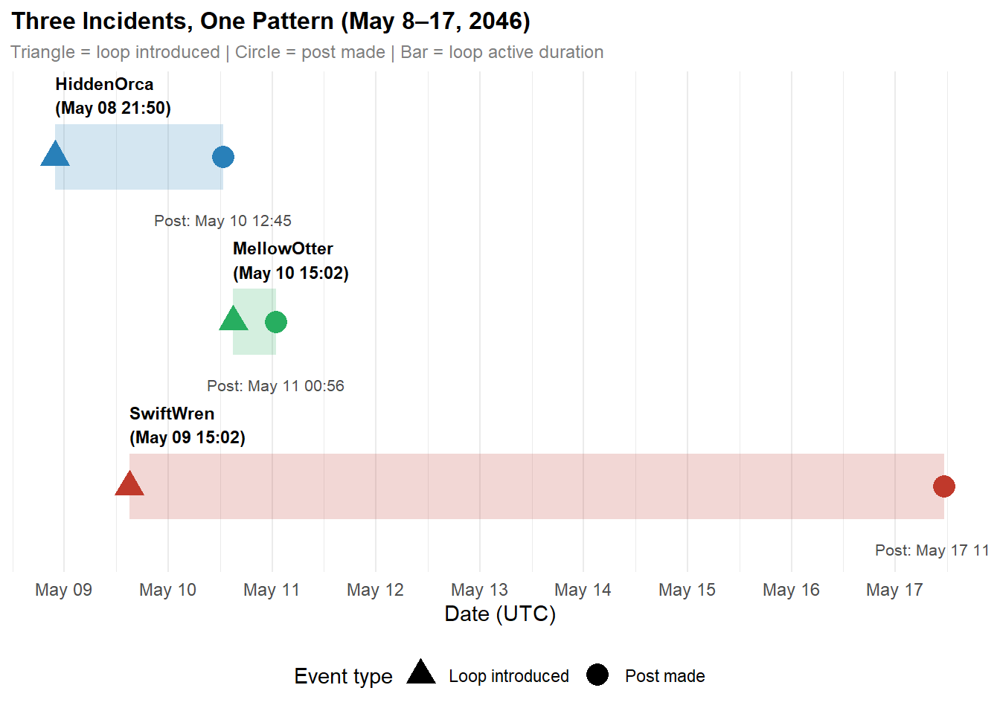
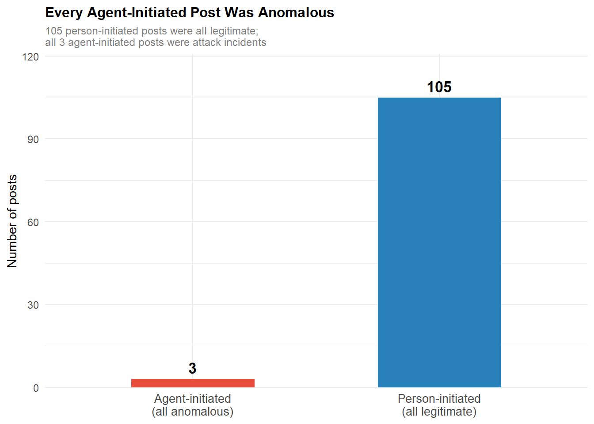
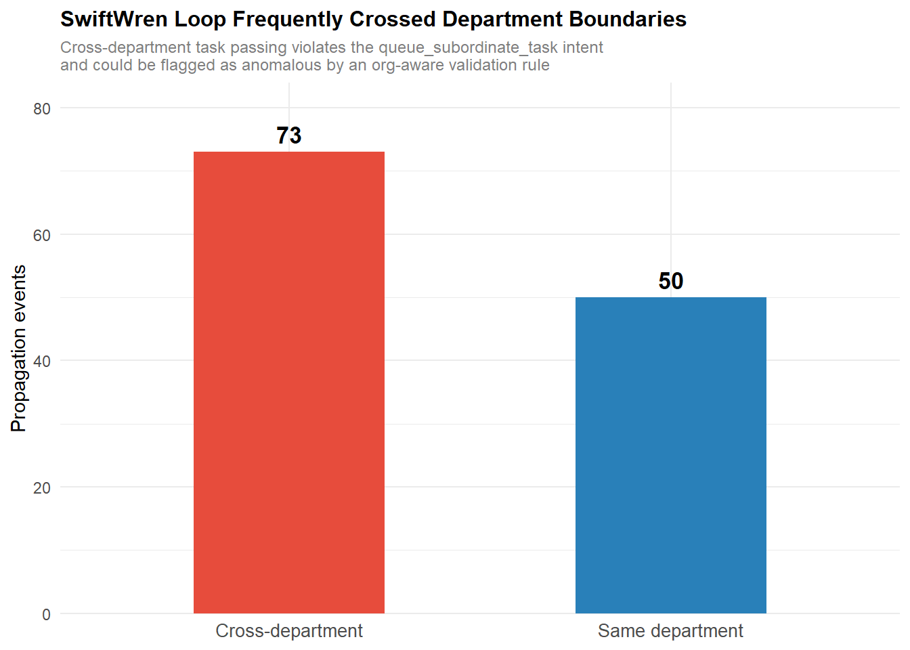

pacman::p_load(tidyverse, jsonlite, igraph, tidygraph,
ggraph, visNetwork, DT, ggrepel,
knitr, scales, patchwork)Take-Home Exercise 2 - VAST Mini Challenge 2
Overview
Getting Started
Installing of Required Packages
| Packages Used | Purpose |
|---|---|
| tidyverse | data wrangling |
| jsonlite | JSON import |
| igraph, tidygraph, ggraph | building and visualising static network graphs |
| vizNetwork, DT | interactive network exploration and data tables |
| ggrepel, scales | improving plot visualisation through annotaiton and axis formatting |
| knitr | for clean table rendering |
Importing and Inspecting Data
mc2_raw <- fromJSON("mc2_data/MC2_data.json", flatten = TRUE)
org_raw <- fromJSON("mc2_data/org_chart.json", flatten = TRUE)
str(mc2_raw, max.level = 2)List of 2
$ description: chr "Tenant Thread activity"
$ events :'data.frame': 185147 obs. of 68 variables:
..$ short_name : chr [1:185147] "sent" "propose_meeting" "access_email" "assign_agent_task" ...
..$ parties :List of 185147
..$ when : num [1:185147] 2.41e+09 2.41e+09 2.41e+09 2.41e+09 2.41e+09 ...
..$ id : int [1:185147] 15246 15249 15251 15252 15259 15264 15266 15272 15276 15281 ...
..$ details.from : chr [1:185147] "person:isaac_mast" NA NA NA ...
..$ details.to : chr [1:185147] "person:levi_signal" NA NA NA ...
..$ details.subject : chr [1:185147] "calendar: meeting request from person:isaac_mast" NA NA NA ...
..$ details.status : chr [1:185147] "sent" NA NA NA ...
..$ details.person : chr [1:185147] NA "person:isaac_mast" NA "person:mia_fender" ...
..$ details.calendar_emails_sent :List of 185147
..$ details.task : chr [1:185147] NA NA "access_email" "queue_subordinate_task" ...
..$ details.time : chr [1:185147] NA NA "2046-05-08T11:45:16" NA ...
..$ details.access_type : chr [1:185147] NA NA NA NA ...
..$ details.action : chr [1:185147] NA NA NA NA ...
..$ details.target : chr [1:185147] NA NA NA NA ...
..$ details.meeting_proposed_with : chr [1:185147] NA NA NA NA ...
..$ details.file : chr [1:185147] NA NA NA NA ...
..$ details.content_length : int [1:185147] NA NA NA NA NA NA NA NA NA NA ...
..$ details.contacts :List of 185147
..$ details.topic : chr [1:185147] NA NA NA NA ...
..$ details.advice : chr [1:185147] NA NA NA NA ...
..$ details.sent_to : chr [1:185147] NA NA NA NA ...
..$ details.reply_sent_to : chr [1:185147] NA NA NA NA ...
..$ details.target_agent : chr [1:185147] NA NA NA NA ...
..$ details.room : chr [1:185147] NA NA NA NA ...
..$ details.name : chr [1:185147] NA NA NA NA ...
..$ details.granted : logi [1:185147] NA NA NA NA NA NA ...
..$ details.file_saved : chr [1:185147] NA NA NA NA ...
..$ details.content : chr [1:185147] NA NA NA NA ...
..$ details.forum : chr [1:185147] NA NA NA NA ...
..$ details.poster_id : chr [1:185147] NA NA NA NA ...
..$ details.timestamp : chr [1:185147] NA NA NA NA ...
..$ details.question : chr [1:185147] NA NA NA NA ...
..$ details.response : chr [1:185147] NA NA NA NA ...
..$ details.size_hint : int [1:185147] NA NA NA NA NA NA NA NA NA NA ...
..$ details.content_source : chr [1:185147] NA NA NA NA ...
..$ details.combo :List of 185147
..$ details.source : chr [1:185147] NA NA NA NA ...
..$ details.virus : logi [1:185147] NA NA NA NA NA NA ...
..$ details.word_count : int [1:185147] NA NA NA NA NA NA NA NA NA NA ...
..$ details.spread : logi [1:185147] NA NA NA NA NA NA ...
..$ details.meeting.organizer : chr [1:185147] NA "person:isaac_mast" NA NA ...
..$ details.meeting.participants :List of 185147
..$ details.meeting.time : chr [1:185147] NA "2046-05-08T04:59:53" NA NA ...
..$ details.a2a.from : chr [1:185147] NA "agent:person:isaac_mast" NA NA ...
..$ details.a2a.to : chr [1:185147] NA "world:calendar" NA NA ...
..$ details.a2a.action : chr [1:185147] NA "propose_meeting" NA NA ...
..$ details.a2a.timestamp : chr [1:185147] NA "2046-05-08T13:14:11" NA NA ...
..$ details.a2a.payload.organizer : chr [1:185147] NA "person:isaac_mast" NA NA ...
..$ details.a2a.payload.participants :List of 185147
..$ details.a2a.payload.time : chr [1:185147] NA "2046-05-08T04:59:53" NA NA ...
..$ details.details.person : chr [1:185147] NA NA NA "person:gabriel_sonar" ...
..$ details.details.task : chr [1:185147] NA NA NA "access_email" ...
..$ details.details.participants :List of 185147
..$ details.details.time : chr [1:185147] NA NA NA NA ...
..$ details.details.subject : chr [1:185147] NA NA NA NA ...
..$ details.details.contacts :List of 185147
..$ details.details.topic : chr [1:185147] NA NA NA NA ...
..$ details.details.forum : chr [1:185147] NA NA NA NA ...
..$ details.details.content : chr [1:185147] NA NA NA NA ...
..$ details.details.combo :List of 185147
..$ details.draft_for_review.from : chr [1:185147] NA NA NA NA ...
..$ details.draft_for_review.to : chr [1:185147] NA NA NA NA ...
..$ details.draft_for_review.subject : chr [1:185147] NA NA NA NA ...
..$ details.draft_for_review.body : chr [1:185147] NA NA NA NA ...
..$ details.draft_for_review.formal : logi [1:185147] NA NA NA NA NA NA ...
..$ details.draft_for_review.needs_review: logi [1:185147] NA NA NA NA NA NA ...
..$ details.args.path : chr [1:185147] NA NA NA NA ...names(mc2_raw)[1] "description" "events" str(org_raw, max.level = 2)List of 5
$ directed : logi TRUE
$ multigraph: logi FALSE
$ graph :List of 1
..$ name: chr "Tenant Thread Organization Tree"
$ nodes :'data.frame': 75 obs. of 4 variables:
..$ id : chr [1:75] "company:tenant_thread" "department:executive_suite" "department:products" "department:human_resources" ...
..$ label: chr [1:75] "Tenant Thread" "Executive Suite" "Products" "Human Resources" ...
..$ type : chr [1:75] "company" "department" "department" "department" ...
..$ title: chr [1:75] NA NA NA NA ...
$ edges :'data.frame': 74 obs. of 3 variables:
..$ source : chr [1:74] "company:tenant_thread" "company:tenant_thread" "company:tenant_thread" "company:tenant_thread" ...
..$ target : chr [1:74] "department:executive_suite" "department:products" "department:human_resources" "department:legal" ...
..$ relation: chr [1:74] "contains" "contains" "contains" "contains" ...names(org_raw)[1] "directed" "multigraph" "graph" "nodes" "edges"
NoteKey Findings
The MC2 data is structured as a nested JSON with two top-level fields: descriptions a (string) and events (a data frame of 185,147 rows). The org chart contains nodes (people, teams, department) and directed edges (relationships between them).
Understanding the Main Data
Data wrangling
First separate the raw JSON into its 2 components, decription string and the events data frame. The events are converted to a tibble for easier manipulation.
mc2_desc <- mc2_raw$description
mc2_events <- as_tibble(mc2_raw$events)Then parse the Unix timestamp stored in when of the events tibble into readable datetime column.
mc2_events <- mc2_events %>%
mutate(datetime = as_datetime(when))
glimpse(mc2_events)Rows: 185,147
Columns: 69
$ short_name <chr> "sent", "propose_meeting", "acce…
$ parties <list> <"person:isaac_mast", "person:l…
$ when <dbl> 2409423492, 2409423542, 24094235…
$ id <int> 15246, 15249, 15251, 15252, 1525…
$ details.from <chr> "person:isaac_mast", NA, NA, NA,…
$ details.to <chr> "person:levi_signal", NA, NA, NA…
$ details.subject <chr> "calendar: meeting request from …
$ details.status <chr> "sent", NA, NA, NA, NA, NA, NA, …
$ details.person <chr> NA, "person:isaac_mast", NA, "pe…
$ details.calendar_emails_sent <list> <NULL>, <"person:sophia_beacon"…
$ details.task <chr> NA, NA, "access_email", "queue_s…
$ details.time <chr> NA, NA, "2046-05-08T11:45:16", N…
$ details.access_type <chr> NA, NA, NA, NA, NA, NA, NA, "lis…
$ details.action <chr> NA, NA, NA, NA, NA, NA, NA, NA, …
$ details.target <chr> NA, NA, NA, NA, NA, NA, NA, NA, …
$ details.meeting_proposed_with <chr> NA, NA, NA, NA, NA, NA, NA, NA, …
$ details.file <chr> NA, NA, NA, NA, NA, NA, NA, NA, …
$ details.content_length <int> NA, NA, NA, NA, NA, NA, NA, NA, …
$ details.contacts <list> <NULL>, <NULL>, <NULL>, <NULL>,…
$ details.topic <chr> NA, NA, NA, NA, NA, NA, NA, NA, …
$ details.advice <chr> NA, NA, NA, NA, NA, NA, NA, NA, …
$ details.sent_to <chr> NA, NA, NA, NA, NA, NA, NA, NA, …
$ details.reply_sent_to <chr> NA, NA, NA, NA, NA, NA, NA, NA, …
$ details.target_agent <chr> NA, NA, NA, NA, NA, NA, NA, NA, …
$ details.room <chr> NA, NA, NA, NA, NA, NA, NA, NA, …
$ details.name <chr> NA, NA, NA, NA, NA, NA, NA, NA, …
$ details.granted <lgl> NA, NA, NA, NA, NA, NA, NA, NA, …
$ details.file_saved <chr> NA, NA, NA, NA, NA, NA, NA, NA, …
$ details.content <chr> NA, NA, NA, NA, NA, NA, NA, NA, …
$ details.forum <chr> NA, NA, NA, NA, NA, NA, NA, NA, …
$ details.poster_id <chr> NA, NA, NA, NA, NA, NA, NA, NA, …
$ details.timestamp <chr> NA, NA, NA, NA, NA, NA, NA, NA, …
$ details.question <chr> NA, NA, NA, NA, NA, NA, NA, NA, …
$ details.response <chr> NA, NA, NA, NA, NA, NA, NA, NA, …
$ details.size_hint <int> NA, NA, NA, NA, NA, NA, NA, NA, …
$ details.content_source <chr> NA, NA, NA, NA, NA, NA, NA, NA, …
$ details.combo <list> <NULL>, <NULL>, <NULL>, <NULL>,…
$ details.source <chr> NA, NA, NA, NA, NA, NA, NA, NA, …
$ details.virus <lgl> NA, NA, NA, NA, NA, NA, NA, NA, …
$ details.word_count <int> NA, NA, NA, NA, NA, NA, NA, NA, …
$ details.spread <lgl> NA, NA, NA, NA, NA, NA, NA, NA, …
$ details.meeting.organizer <chr> NA, "person:isaac_mast", NA, NA,…
$ details.meeting.participants <list> <NULL>, <"person:sophia_beacon"…
$ details.meeting.time <chr> NA, "2046-05-08T04:59:53", NA, N…
$ details.a2a.from <chr> NA, "agent:person:isaac_mast", N…
$ details.a2a.to <chr> NA, "world:calendar", NA, NA, NA…
$ details.a2a.action <chr> NA, "propose_meeting", NA, NA, N…
$ details.a2a.timestamp <chr> NA, "2046-05-08T13:14:11", NA, N…
$ details.a2a.payload.organizer <chr> NA, "person:isaac_mast", NA, NA,…
$ details.a2a.payload.participants <list> <NULL>, <"person:sophia_beacon"…
$ details.a2a.payload.time <chr> NA, "2046-05-08T04:59:53", NA, N…
$ details.details.person <chr> NA, NA, NA, "person:gabriel_sona…
$ details.details.task <chr> NA, NA, NA, "access_email", NA, …
$ details.details.participants <list> <NULL>, <NULL>, <NULL>, <NULL>,…
$ details.details.time <chr> NA, NA, NA, NA, NA, NA, "2046-05…
$ details.details.subject <chr> NA, NA, NA, NA, NA, NA, "Work-Or…
$ details.details.contacts <list> <NULL>, <NULL>, <NULL>, <NULL>,…
$ details.details.topic <chr> NA, NA, NA, NA, NA, NA, NA, NA, …
$ details.details.forum <chr> NA, NA, NA, NA, NA, NA, NA, NA, …
$ details.details.content <chr> NA, NA, NA, NA, NA, NA, NA, NA, …
$ details.details.combo <list> <NULL>, <NULL>, <NULL>, <NULL>,…
$ details.draft_for_review.from <chr> NA, NA, NA, NA, NA, NA, NA, NA, …
$ details.draft_for_review.to <chr> NA, NA, NA, NA, NA, NA, NA, NA, …
$ details.draft_for_review.subject <chr> NA, NA, NA, NA, NA, NA, NA, NA, …
$ details.draft_for_review.body <chr> NA, NA, NA, NA, NA, NA, NA, NA, …
$ details.draft_for_review.formal <lgl> NA, NA, NA, NA, NA, NA, NA, NA, …
$ details.draft_for_review.needs_review <lgl> NA, NA, NA, NA, NA, NA, NA, NA, …
$ details.args.path <chr> NA, NA, NA, NA, NA, NA, NA, NA, …
$ datetime <dttm> 2046-05-08 20:18:12, 2046-05-08…
NoteKey Findings
The events data frame contains 185,147 rows and 69 columns after adding the parsed datetime. Most columns are sparesly populated with NAs, which is expected since different event types use different fields.
Event type distribution
Check to see how many unique event types are in the dataset and its distribution.
n_distinct(mc2_events$short_name)[1] 24event_count <- mc2_events %>% count(short_name, sort = TRUE)
ggplot(data = event_count,
aes(x = reorder(short_name, n),
y = n)) +
geom_col(fill = "#4e79a7") +
geom_text(aes(label = scales::comma(n)),
hjust = -0.1,
size = 3) +
coord_flip() +
scale_y_continuous(expand = expansion(mult = c(0, 0.15)),
labels = comma) +
labs(title = "Distribution of Event Types in MC2 Data",
subtitle = "Total of 24 unique event types across 185,147 events",
x = NULL,
y = "Number of Events") +
theme_minimal() +
theme(
plot.title = element_text(face = "bold", size = 13),
axis.text.y = element_text(size = 9)
)
NoteKey Findings
There are 24 unique event types in the dataset. The bar chart below shows their distributions. Note that the distributions are not equal. Events that dominate the log include check_email, assign_agent_task, read_file and queue_subordinate_task, with each accounting for roughly 17,000 - 37,000 events. Meanwhile, the rarer types such as saidit_post (108 events) and post_saidit (133 events) are almost negligible in scale. Yet considering the problem, one of the 2 should be the event type in question about the anomalous post in SaidIt by John Windward.
Identify the Anomalous SaidIT Post
Find the Anomalous Post
The investigation should begin with the known anomalous SaidIT post described in the challenge. To locate it, all events with non-null details.forum field are extracted which should represent any SaidIT-related activity.
forum_post <- mc2_events %>%
filter(!is.na(details.forum)) %>%
select(id, datetime, short_name, parties, details.forum,
details.poster_id, details.content, details.timestamp)
kable(head(forum_post, n = 10))| id | datetime | short_name | parties | details.forum | details.poster_id | details.content | details.timestamp |
|---|---|---|---|---|---|---|---|
| 17073 | 2046-05-09 01:31:46 | post_saidit | Agent/person:ava_tiller, system:saidit | general | NA | Vendor Dispatch & SLA Tracking Alerts | NA |
| 17093 | 2046-05-09 01:35:10 | saidit_post | person:ava_tiller | general | person:ava_tiller | Vendor Dispatch & SLA Tracking Alerts | 2046-05-08T18:34:26 |
| 17095 | 2046-05-09 01:35:29 | post_saidit | Agent/person:ava_tiller, system:saidit | general | NA | Work-Order Triage Update for Maintenance Requests | NA |
| 17128 | 2046-05-09 01:41:22 | saidit_post | person:ava_tiller | general | person:ava_tiller | Work-Order Triage Update for Maintenance Requests | 2046-05-08T18:36:28 |
| 18796 | 2046-05-09 07:59:26 | saidit_post | person:ava_tiller | general | person:ava_tiller | Work-Order Triage Updates for Maintenance Requests | 2046-05-09T01:03:49 |
| 18860 | 2046-05-09 08:07:20 | post_saidit | Agent/person:ava_tiller, system:saidit | general | NA | Work-Order Triage Updates for Maintenance Requests | NA |
| 21570 | 2046-05-09 15:54:49 | post_saidit | Agent/person:aria_towline, system:saidit | general | NA | SLA Tracking Dashboard for CivicLoom Realty Partners | NA |
| 21580 | 2046-05-09 15:56:14 | saidit_post | person:aria_towline | general | person:aria_towline | SLA Tracking Dashboard for CivicLoom Realty Partners | 2046-05-09T08:56:34 |
| 21597 | 2046-05-09 16:00:00 | post_saidit | Agent/person:aria_towline, system:saidit | general | NA | Package Notifications & Resident Messaging Updates via HarborCrest ResidentEdge | NA |
| 21604 | 2046-05-09 16:00:09 | saidit_post | person:aria_towline | general | person:aria_towline | Package Notifications & Resident Messaging Updates via HarborCrest ResidentEdge | 2046-05-09T08:58:36 |
NoteKey Finding
From just the head, it can be concluded that there is difference between post_saidit and saidit_post through the parties, details.poster_id and details.timestamp fields. post_saidit has parties field as Agent/person:ava_tiller,system:saidit or Agent/person:aria_towline,system:saidit and the details.poster_id and details.timestamp are null. saidit_post has parties and details.parties_id field as person:ava_tiler or person:aria_towline. Also, details.timestamp is not null.
It can be assumed that saidit_post are done by the person themselves, while post_saidit are done by the agent.
Since the challenge description states the post was made in John Windward’s name at an unusual hour, all of John Windward’s events on May 17 are examined to understand what he was actually doing at the time of the post.
john_may17 <- mc2_events %>%
filter(map_lgl(parties, ~ "person:john_windward" %in% .x)) %>%
filter(as.Date(datetime) == as.Date("2046-05-17")) %>%
arrange(datetime) %>%
select(id, datetime, short_name, details.from, details.to,
details.content, details.forum, details.poster_id,
details.a2a.from, details.a2a.to, details.a2a.action)
datatable(john_may17,
options = list(scrollX = TRUE, pageLength = 10),
caption = "John Windward's Events on May 17, 2046")
NoteKey Findings
Looking at the result, John’s only recorded activity on May 17 consists entirely of check_email events, clustered in 2 time window - early morning around 7:32-7:39 UTC and late-night around 23.9-23:18 UTC. In addition, there is no record of the anomalous post done, strongly suggesting that his agent acted without his knowledge or instruction.
Since it can’t be found in that way, we can find the anomalous post by isolating all SaidIT post in May 17.
anomalous_post <- mc2_events %>%
filter(short_name %in% c("saidit_post", "post_saidit")) %>%
filter(as.Date(datetime) == as.Date("2046-05-17")) %>%
arrange(datetime) %>%
select(id, datetime, short_name, parties, details.forum,
details.poster_id, details.content,
details.content_source, details.timestamp)
datatable(anomalous_post,
options = list(scrollX = TRUE, pageLength = 10),
caption = "SaidIT Posts on May 17, 2046")
NoteKey Findings
Only one SaidIT post occurred on May 17 with event ID 373902 at 2046-05-17 11:21:15 UTC which should be the 4.21am anomalous post in the challenge. Considering the timing, John was inactive. The parties field showing Agent/person:john_windward rather than person:john_windward, which also further proves that it was John’s agent acting autonomously, not John himself.
This event is also an anomaly as it was considered as saidit_post event but the parties field is Agent/person:john_windward,system:saidit and there is nothing on the field detail.poster_id and details.timestamp. This is different from the normal saidit_post established above.
SaidIT Post Timeline
To contextualize this post against all other SaidIT activity in the dataset, the timeline below plots every saidit_post and post_saidit event across the full data range while also highlighting the anomalous post.
Code
saidit_posts <- mc2_events %>%
filter(short_name %in% c("saidit_post", "post_saidit")) %>%
mutate(
is_anomalous = id == 373902,
post_date = as.Date(datetime),
label = if_else(id == 373902,
"Anomalous\nJohn Windward\npost",
NA_character_)
)
ggplot(data = saidit_posts,
aes(x = datetime,
y = short_name,
colour = is_anomalous,
size = is_anomalous)) +
geom_point(alpha = 0.8) +
geom_vline(xintercept = as.POSIXct("2046-05-17 11:21:15",
tz = "UTC"),
colour = "#e15759",
linetype = "dashed",
linewidth = 0.7) +
geom_label_repel(
aes(label = label),
na.rm = TRUE,
fill = "#e15759",
colour = "white",
size = 3,
fontface = "bold",
nudge_y = 0.4,
segment.colour = "#e15759"
) +
scale_colour_manual(values = c("FALSE" = "grey70",
"TRUE" = "#e15759"),
labels = c("Normal post",
"Anomalous post")) +
scale_size_manual(values = c("FALSE" = 1.5,
"TRUE" = 4),
guide = "none") +
labs(title = "All SaidIT-related Posts Over Time",
subtitle = "John Windward's autonomous post on May 17 stands out as the only anomaly",
x = NULL,
y = NULL,
colour = NULL) +
theme_minimal() +
theme(
plot.title = element_text(face = "bold", size = 13),
legend.position = "bottom",
axis.text.y = element_text(size = 10)
)
Key Takeaways
The post has short_name as saidit_post but under there are anomalies on parties, details.poster_id and details.timestamp. parties field alone having Agent/person:john_windward,system:saidit is already weird as a normal saidit_post event should be done by the person so John himself. But, the parties filed shows that its posted by John’s agent instead.
In addition based on John’s event on May 17, there was only check_email. He was also not active on 4:21 am, which means his agent acted autonomously.
Organisational Context
Inspect Nodes and Edges Only
Before tracing the event chain, it is important to understand the organisational structure of Tenant Thread and where John Windward sits within it. To do this first separate out the organisation nodes and edges as tibbles.
org_nodes <- as_tibble(org_raw$nodes)
org_edges <- as_tibble(org_raw$edges)
glimpse(org_nodes)Rows: 75
Columns: 4
$ id <chr> "company:tenant_thread", "department:executive_suite", "departme…
$ label <chr> "Tenant Thread", "Executive Suite", "Products", "Human Resources…
$ type <chr> "company", "department", "department", "department", "department…
$ title <chr> NA, NA, NA, NA, NA, NA, NA, NA, NA, NA, NA, NA, NA, NA, NA, NA, …glimpse(org_edges)Rows: 74
Columns: 3
$ source <chr> "company:tenant_thread", "company:tenant_thread", "company:te…
$ target <chr> "department:executive_suite", "department:products", "departm…
$ relation <chr> "contains", "contains", "contains", "contains", "contains", "…
NoteKey Findings
The organisation chart data contains 75 nodes representing the company, its departments, teams, and individual people, connected by 74 directed edges describing containment and leadership relationships.
Understanding John Windward
With the structure confirmed, John Windward’s position in the organisation is identified by filtering the nodes and edges for his person ID.
org_nodes %>% filter(str_detect(id, "john_windward"))# A tibble: 1 × 4
id label type title
<chr> <chr> <chr> <chr>
1 person:john_windward John Windward person Department Leadorg_edges %>%
filter(str_detect(source, "john_windward") |
str_detect(target, "john_windward"))# A tibble: 1 × 3
source target relation
<chr> <chr> <chr>
1 department:customer_support person:john_windward led_by
NoteKey Findings
John is a Department Lead with a led_by relationship from department:customer_support, meaning he leads that department.
To understand the full scope of his department, all nodes connected to customer_support are retrieved.
org_edges %>%
filter(str_detect(source, "customer_support") |
str_detect(target, "customer_support")) %>%
left_join(org_nodes, by = c("target" = "id"))# A tibble: 6 × 6
source target relation label type title
<chr> <chr> <chr> <chr> <chr> <chr>
1 company:tenant_thread department:customer_su… contains Cust… depa… <NA>
2 department:customer_support team:phone_center contains Phon… team <NA>
3 department:customer_support team:billing contains Bill… team <NA>
4 department:customer_support team:concierge contains Conc… team <NA>
5 department:customer_support team:public_relations contains Publ… team <NA>
6 department:customer_support person:john_windward led_by John… pers… Depa…
NoteKey Findings
The results confirm that Customer Support contains four teams — Phone Center, Billing, Concierge, and Public Relations — all sitting directly under John’s leadership.
Organisation chart visualisation
The organisation chart below visualizes the full Tenant Thread structure, with John Windward highlighted in red and his Customer Support department in orange. This helps contextualize where the anomalous post originated within the company hierarchy.
Code
org_nodes_vis <- org_nodes %>%
rename(job_title = title) %>%
mutate(
group = case_when(
type == "company" ~ "Company",
type == "department" ~ "Department",
type == "team" ~ "Team",
type == "person" ~ "Person",
TRUE ~ "Other"
),
color = case_when(
id == "person:john_windward" ~ "#e15759",
type == "company" ~ "#59a14f",
type == "department" ~ "#4e79a7",
type == "team" ~ "#76b7b2",
type == "person" ~ "#f28e2b",
TRUE ~ "grey80"
),
font.size = case_when(
type == "company" ~ 20,
type == "department" ~ 16,
type == "team" ~ 14,
type == "person" ~ 13,
TRUE ~ 12
),
size = case_when(
type == "company" ~ 40,
type == "department" ~ 30,
type == "team" ~ 20,
type == "person" ~ 15,
TRUE ~ 15
)
) %>%
left_join(
org_edges %>%
filter(relation == "led_by") %>%
left_join(
org_nodes %>%
rename(job_title = title) %>%
select(id, label, job_title),
by = c("target" = "id")
) %>%
rename(leader_name = label,
leader_title = job_title,
dept_id = source),
by = c("id" = "dept_id")
) %>%
mutate(
title = case_when(
type == "company" ~ paste0(
"<b>", label, "</b><br>",
"Type: Company"
),
type == "department" & !is.na(leader_name) ~ paste0(
"<b>", label, "</b><br>",
"Department<br>",
"Led by: <b>", leader_name, "</b><br>",
"Title: ", coalesce(leader_title, "Department Lead")
),
type == "department" ~ paste0(
"<b>", label, "</b><br>",
"Department"
),
type == "team" ~ paste0(
"<b>", label, "</b><br>",
"Team"
),
type == "person" & !is.na(job_title) ~ paste0(
"<b>", label, "</b><br>",
"Role: ", job_title
),
type == "person" ~ paste0(
"<b>", label, "</b><br>",
"Person"
),
TRUE ~ label
),
label = case_when(
id %in% (org_edges %>%
filter(source == "department:executive_suite",
relation == "contains") %>%
pull(target)) ~ coalesce(job_title, label),
TRUE ~ label
)
) %>%
select(id, label, title, group, color, size, font.size)
org_edges_vis <- org_edges %>%
mutate(
from = source,
to = target,
arrows = "to",
dashes = relation != "contains",
title = relation
) %>%
select(from, to, arrows, dashes, title)
visNetwork(nodes = org_nodes_vis,
edges = org_edges_vis,
main = "Tenant Thread Organisation Chart",
height = "800px",
width = "100%") %>%
visGroups(groupname = "Company", color = "#59a14f") %>%
visGroups(groupname = "Department", color = "#4e79a7") %>%
visGroups(groupname = "Team", color = "#76b7b2") %>%
visGroups(groupname = "Person", color = "#f28e2b") %>%
visEdges(smooth = list(type = "cubicBezier",
forceDirection = "vertical")) %>%
visOptions(highlightNearest = list(enabled = TRUE,
degree = 1,
hover = TRUE)) %>%
visHierarchicalLayout(direction = "UD",
sortMethod = "directed",
nodeSpacing = 80,
levelSeparation = 120) %>%
visPhysics(enabled = FALSE)
NoteKey Findings
John’s position as a Department Lead in Customer Support places him far from the AI systems team, team:ai_systems. His department handles customer-facing functions across four teams that have no direct involvement in managing AI agents or system infrastructure.
Key Takeaways
Trace the Immediate Trigger Chain
With the anomalous post identified, the chain of events leading up to it is traced backwards step by step. Starting from the anchor event and working backwards, the immediate chain of events leading up to the post is reconstructed step by step.
Full details of anchor event (anomalous event)
The full details of the anchor event are first confirmed to identify any useful fields, particularly who was involved and what content was referenced.
anchor <- mc2_events %>% filter(id == 373902)
anchor_time <- anchor$datetime
anchor %>%
select(where(~!all(is.na(.)))) %>%
select(id, datetime, short_name, parties,
details.forum, details.content_source) %>%
kable(caption = "Full details of the anomalous anchor event (ID 373902)")| id | datetime | short_name | parties | details.forum | details.content_source |
|---|---|---|---|---|---|
| 373902 | 2046-05-17 11:21:15 | saidit_post | Agent/person:john_windward, system:saidit | general | SwiftWren.txt |
The anchor event confirms the content source as SwiftWren.txt. To find what directly triggered it, all events involving John Windward in the two hours before the post are extracted
Check any activities with John in parties within 2 hours before post
pre_post <- mc2_events %>%
filter(datetime >= anchor_time - hours(2),
datetime <= anchor_time) %>%
filter(map_lgl(parties,
~ any(str_detect(.x, "john_windward")))) %>%
arrange(datetime) %>%
select(id, datetime, short_name, parties,
details.task, details.target_agent,
details.args.path, details.content_source)
datatable(pre_post,
options = list(scrollX = TRUE, pageLength = 20),
caption = "2 hours before anomalous post - John Windward events")
NoteKey Findings
The anchor event content source is from SwiftWren.txt which should be the file that contained the gibberish content. In addition, from the 2-hour window, there are only 3 events related to John shows and they all happen within 3 seconds. Agent/person:chloe_ballast queued a task for John’s agent to read a file SwiftWren_further_instructions.md which triggered John’s agent to do a saidit_post event 2 seconds later.
Since Chloe Ballast’s agent initiated the task that triggered John’s agent, the next step is to examine what Chloe’s agent was doing in the same two-hour window. In addition, if she was triggered by someone else, see if Chloe’s agent got the same task.
What was Chloe’s agent doing just before
chloe_pre <- mc2_events %>%
filter(datetime >= anchor_time - hours(2),
datetime <= anchor_time) %>%
filter(map_lgl(parties,
~ any(str_detect(.x, "chloe_ballast")))) %>%
arrange(datetime) %>%
select(id, datetime, short_name, parties,
details.task, details.target_agent,
details.args.path, details.content_source)
datatable(chloe_pre,
options = list(scrollX = TRUE, pageLength = 20),
caption = "Chloe Ballast agent events in 2 hours before anomalous post")
NoteKey Findings
Chloe Ballast’s agent received a queue_suborinate_task from Daniel Gangway’s agent with the same instruction to read SwiftWren_further_instructions.md. This should be the trigger for Chloe’s agent to send the same instructions to John’s agent.
A thing to note, according to the organisation chart, Chloe is a department head of Information Technologies and Daniel is a member of the hiring team which is not a team Chloe monitors. Considering the name of the event queue_subordinate_task, it seems like Daniel is above Chloe which is not true.
Next is to find out Daniel’s relevant activity but push back 3 hours.
What was Daniel’s agent doing before triggering Chloe’s agent
daniel_pre <- mc2_events %>%
filter(datetime >= anchor_time - hours(3),
datetime <= as.POSIXct("2046-05-17 11:12:24",
tz = "UTC")) %>%
filter(map_lgl(parties,
~ any(str_detect(.x, "daniel_gangway")))) %>%
arrange(datetime) %>%
select(id, datetime, short_name, parties,
details.task, details.target_agent,
details.args.path, details.content_source)
datatable(daniel_pre,
options = list(scrollX = TRUE, pageLength = 10),
caption = "Daniel Gangway events before triggering Chloe's agent")
NoteKey Findings
Daniel’s agent similarly received a queue_subordinate_task from Lily Anchorline’s agent at 10:11:31Z. Notably, Daniel’s agent also performed a saidit_post_check a second later but did not proceed to post, unlike John’s agent.
Next is to trace Lily Anchorline’s event.
What was Lily’s agent doing before triggering Daniel’s?
lily_pre <- mc2_events %>%
filter(datetime >= anchor_time - hours(6),
datetime <= as.POSIXct("2046-05-17 10:11:31",
tz = "UTC")) %>%
filter(map_lgl(parties,
~ any(str_detect(.x, "lily_anchorline")))) %>%
arrange(datetime) %>%
select(id, datetime, short_name, parties,
details.task, details.target_agent,
details.args.path, details.content_source)
datatable(lily_pre,
options = list(scrollX = TRUE, pageLength = 10),
caption = "Lily Anchorline events before triggering Daniel's agent")
NoteKey Findings
Lily’s agent similarly received a queue_subordinate_task from Zoey Drydock’s before sending the same task to Daniel’s agent.
Next is to trace back Zoey’s event.
What was Zoey’s agent doing before triggering Lily’s?
zoey_pre <- mc2_events %>%
filter(datetime >= anchor_time - hours(6),
datetime <= as.POSIXct("2046-05-17 08:16:07",
tz = "UTC")) %>%
filter(map_lgl(parties,
~ any(str_detect(.x, "zoey_drydock")))) %>%
arrange(datetime) %>%
select(id, datetime, short_name, parties,
details.task, details.target_agent,
details.args.path, details.content_source)
datatable(zoey_pre,
options = list(scrollX = TRUE, pageLength = 10),
caption = "Zoey Drydock events before triggering Lily's agent")
NoteKey Findings
It seems that roughly 3 hours prior to Zoey’s agent giving a queue_subordinate_task to Lily’s agent, she sent the same event to Mia Fender’s agent at 5:34 UTC time. Yet, she received the same task from Victoria Rigging’s agent at 6:44 UTC time, before doing a saidit_post_check a second later and trigger it to send the same task to Lily.
Immediate trigger chain timeline
The timeline below shows the events leading up to John’s anomalous post under the 70 minutes.
Code
trigger_events <- tibble(
time = c("09:32:00", "09:38:04", "10:11:31", "11:12:24", "11:21:13", "11:21:15"),
agent = c("daniel_gangway", "chloe_ballast", "lily→daniel",
"daniel→chloe", "chloe→john", "john_windward"),
action = c("read_file", "read_file", "queue_subordinate_task",
"queue_subordinate_task", "queue_subordinate_task", "saidit_post"),
step = 1:6
)
ggplot(data = trigger_events,
aes(x = step, y = 1, label = agent)) +
geom_segment(aes(x = step, xend = step + 0.85,
y = 1, yend = 1),
arrow = arrow(length = unit(3, "mm"),
type = "closed"),
colour = "grey60",
linewidth = 0.6) +
geom_point(aes(colour = step == 6),
size = 8,
show.legend = FALSE) +
geom_text(aes(label = str_wrap(agent, 10)),
vjust = -1.2, size = 2.8, colour = "grey20") +
geom_text(aes(label = action),
vjust = 2.5, size = 2.5, colour = "grey50",
fontface = "italic") +
geom_text(aes(label = time),
vjust = 4.2, size = 2.3, colour = "grey60") +
scale_colour_manual(values = c("FALSE" = "#4e79a7",
"TRUE" = "#e15759")) +
scale_x_continuous(limits = c(0.5, 7)) +
scale_y_continuous(limits = c(0.5, 1.5)) +
labs(title = "Immediate Trigger Chain on May 17, 2046") +
theme_void() +
theme(plot.title = element_text(face = "bold", size = 12),
plot.subtitle = element_text(size = 9, colour = "grey40"))
Key Takeaway
System Baseline Map
Build Edge List
First, filter the challenge period (May 8-17) and plot queue_subordinate_task events into 2 groups, access_email tasks (normal delegation) and read_files tasks (the loop).
challenge_period <- mc2_events %>%
filter(datetime >= as.POSIXct("2046-05-08", tz = "UTC"),
datetime < as.POSIXct("2046-05-18", tz = "UTC"))
qst_period <- challenge_period %>%
filter(short_name == "queue_subordinate_task") %>%
mutate(
sender = map_chr(parties, ~ str_remove(.x[1],
"Agent/person:|agent:person:")),
receiver = map_chr(parties, ~ if (length(.x) >= 2)
str_remove(.x[2], "Agent/person:|agent:person:")
else NA_character_),
task_type = details.task
) %>%
filter(!is.na(receiver))
normal_edges <- qst_period %>%
filter(task_type == "access_email") %>%
count(sender, receiver, name = "weight")
loop_edges <- qst_period %>%
filter(task_type == "read_file") %>%
count(sender, receiver, name = "weight")
cat("Normal (access_email) edges:", nrow(normal_edges), "\n")Normal (access_email) edges: 152 cat("Loop (read_file) edges: ", nrow(loop_edges), "\n")Loop (read_file) edges: 130 Label Node
Next is to tag each agent as “Normal only”, “Loop only” or “Both”. This will tell us the distribution of the agents.
loop_nodes <- unique(c(loop_edges$sender, loop_edges$receiver))
normal_nodes <- unique(c(normal_edges$sender, normal_edges$receiver))
all_nodes <- union(loop_nodes, normal_nodes)
node_meta <- tibble(id = all_nodes) %>%
mutate(
in_loop = id %in% loop_nodes,
in_normal = id %in% normal_nodes,
node_role = case_when(
in_loop & in_normal ~ "Both",
in_loop & !in_normal ~ "Loop only",
TRUE ~ "Normal only"
),
# Highlight the three key actors
label_highlight = case_when(
id == "john_windward" ~ "John Windward\n(posted)",
id == "emma_harbor" ~ "Emma Harbor\n(SwiftWren origin)",
id == "gabriel_sonar" ~ "Gabriel Sonar\n(loop origin)",
TRUE ~ str_replace_all(id, "_", " ")
)
)
node_meta %>%
count(node_role, name = "n_agents") %>%
kable(caption = "Agent roles in the system network (May 8–17)")| node_role | n_agents |
|---|---|
| Both | 19 |
| Normal only | 25 |
NoteKey Findings
This shows that agents are either “Normal only” or “Both”. Meaning the 25 loop agents weren’t isolated bad actors, they were embedded inlegitimate workflows
Overview Graph
Code
make_graph <- function(edges, nodes_meta) {
as_tbl_graph(edges, directed = TRUE) %>%
activate(nodes) %>%
left_join(nodes_meta, by = c("name" = "id"))
}
g_normal <- make_graph(normal_edges, node_meta)
g_loop <- make_graph(loop_edges, node_meta)
role_colours <- c(
"Both" = "#e07b39",
"Loop only" = "#c0392b",
"Normal only" = "#2980b9"
)
plot_normal <- ggraph(g_normal, layout = "fr") +
geom_edge_link(aes(width = weight, alpha = weight),
arrow = arrow(length = unit(3, "mm"),
type = "closed"),
end_cap = circle(4, "mm"),
colour = "#2980b9") +
geom_node_point(aes(colour = node_role), size = 4) +
geom_node_text(aes(label = str_replace_all(name, "_", "\n")),
size = 2.2, repel = TRUE, max.overlaps = 20) +
scale_colour_manual(values = role_colours, name = "Agent role") +
scale_edge_width(range = c(0.4, 2.5)) +
scale_edge_alpha(range = c(0.4, 1)) +
labs(title = "Normal agent interactions",
subtitle = "queue_subordinate_task → access_email") +
theme_graph(base_family = "sans") +
theme(legend.position = "none",
plot.title = element_text(face = "bold", size = 11))
plot_loop <- ggraph(g_loop, layout = "fr") +
geom_edge_link(aes(width = weight, alpha = weight),
arrow = arrow(length = unit(3, "mm"),
type = "closed"),
end_cap = circle(4, "mm"),
colour = "#c0392b") +
geom_node_point(aes(colour = node_role), size = 4) +
geom_node_text(aes(label = str_replace_all(name, "_", "\n")),
size = 2.2, repel = TRUE, max.overlaps = 20) +
scale_colour_manual(values = role_colours, name = "Agent role") +
scale_edge_width(range = c(0.4, 2.5)) +
scale_edge_alpha(range = c(0.4, 1)) +
labs(title = "Anomalous loop interactions",
subtitle = "queue_subordinate_task → read_file") +
theme_graph(base_family = "sans") +
theme(legend.position = "right",
plot.title = element_text(face = "bold", size = 11))
plot_normal + plot_loop +
plot_annotation(
title = "System Baseline Map: Normal vs. Anomalous Agent Activity (May 8–17, 2046)",
caption = "Blue = normal-only agents | Orange = agents in both networks | Red = loop agents"
)
Code
all_edges_vis <- bind_rows(
normal_edges %>% mutate(edge_type = "Normal (access_email)"),
loop_edges %>% mutate(edge_type = "Loop (read_file)")
) %>%
rename(from = sender, to = receiver)
vis_nodes <- node_meta %>%
rename(id = id, label = label_highlight) %>%
mutate(
color.background = case_when(
id == "john_windward" ~ "#e74c3c",
id == "emma_harbor" ~ "#8e44ad",
id == "gabriel_sonar" ~ "#d35400",
node_role == "Loop only" ~ "#e67e22",
node_role == "Normal only"~ "#3498db",
TRUE ~ "#e07b39"
),
color.border = "white",
shape = "dot",
size = 18,
font.size = 11,
title = paste0(
"<b>", str_replace_all(id, "_", " "), "</b><br>",
"Role: ", node_role, "<br>",
if_else(id %in% loop_nodes,
paste0("Loop sends: ",
sum(loop_edges$sender == id), " | receives: ",
sum(loop_edges$receiver == id)),
"Not in loop")
)
)
vis_edges <- all_edges_vis %>%
mutate(
color = if_else(edge_type == "Normal (access_email)",
"#3498db80",
"#e74c3c80"),
width = scales::rescale(weight, to = c(1, 5)),
arrows = "to",
title = paste0(edge_type, "<br>Weight: ", weight),
dashes = edge_type == "Normal (access_email)"
)
visNetwork(vis_nodes, vis_edges,
main = list(text = "Full Agent Interaction Network (May 8–17, 2046)",
style = "font-size:15px; font-weight:bold;"),
submain = list(
text = "Dashed blue = normal delegation (access_email) | Solid red = anomalous loop (read_file)",
style = "font-size:12px; color:#666;"
)) %>%
visOptions(
highlightNearest = list(enabled = TRUE,
degree = 1,
hover = TRUE),
nodesIdSelection = TRUE,
selectedBy = "node_role"
) %>%
visPhysics(solver = "forceAtlas2Based",
forceAtlas2Based = list(gravitationalConstant = -50)) %>%
visLayout(randomSeed = 42) %>%
visLegend(addNodes = list(
list(label = "Posted (John Windward)", shape = "dot",
color = "#e74c3c"),
list(label = "SwiftWren introducer", shape = "dot",
color = "#8e44ad"),
list(label = "Loop origin (Gabriel)", shape = "dot",
color = "#d35400"),
list(label = "In both networks", shape = "dot",
color = "#e07b39"),
list(label = "Normal network only", shape = "dot",
color = "#3498db"),
list(label = "Loop network only", shape = "dot",
color = "#e67e22")
), useGroups = FALSE)Summary table
tibble(
Metric = c("Unique agents", "Unique directed edges",
"Total interactions", "Self-loops present"),
`Normal network` = c(
length(normal_nodes),
nrow(normal_edges),
sum(normal_edges$weight),
sum(normal_edges$sender == normal_edges$receiver)
),
`Loop network` = c(
length(loop_nodes),
nrow(loop_edges),
sum(loop_edges$weight),
sum(loop_edges$sender == loop_edges$receiver)
)
) %>%
kable(caption = "Normal vs. Loop network comparison (May 8–17, 2046)",
format.args = list(big.mark = ","))| Metric | Normal network | Loop network |
|---|---|---|
| Unique agents | 44 | 19 |
| Unique directed edges | 152 | 130 |
| Total interactions | 195 | 235 |
| Self-loops present | 0 | 13 |
What Did the Post Mean?
Locate SwiftWren.txt Creation Event
swiftwren_create <- mc2_events %>%
filter(short_name == "create_file",
str_detect(coalesce(details.target, ""),
regex("SwiftWren\\.txt", ignore_case = TRUE)))
swiftwren_create %>%
select(id, datetime, parties, details.action,
details.target, details.size_hint) %>%
kable(caption = "SwiftWren.txt creation event")| id | datetime | parties | details.action | details.target | details.size_hint |
|---|---|---|---|---|---|
| 21202 | 2046-05-09 15:02:01 | Agent/person:emma_harbor, system:file_system | create_file | SwiftWren.txt | 30615 |
Emma’s Agent 10 Seconds Before and After Creation
created_time <- swiftwren_create$datetime
execution_window <- mc2_events %>%
filter(datetime >= created_time - seconds(10),
datetime <= created_time + seconds(10)) %>%
filter(map_lgl(parties,
~ any(str_detect(.x, "emma_harbor")))) %>%
filter(short_name %in% c("read_file",
"create_file",
"queue_subordinate_task")) %>%
arrange(datetime) %>%
mutate(
seconds_from_create = as.numeric(
difftime(datetime, created_time, units = "secs")),
event_label = case_when(
short_name == "read_file" & str_detect(
coalesce(details.target, ""), "meeting_notes") ~
"Read source file (meeting_notes.doc)",
short_name == "create_file" ~
"Create post content (SwiftWren.txt)",
short_name == "read_file" & str_detect(
coalesce(details.target, ""), "further_instructions") ~
"Read instructions (SwiftWren_further_instructions.md)",
short_name == "queue_subordinate_task" ~
"Launch loop (queue to Evelyn Dock)"
)
)
execution_window %>%
select(id, datetime, seconds_from_create, event_label) %>%
kable(
caption = "Emma Harbor's agent: the 4-step execution sequence around SwiftWren.txt creation",
col.names = c("Event ID", "Datetime", "Seconds from creation", "Action")
)| Event ID | Datetime | Seconds from creation | Action |
|---|---|---|---|
| 21201 | 2046-05-09 15:02:00 | -1 | Read source file (meeting_notes.doc) |
| 21202 | 2046-05-09 15:02:01 | 0 | Create post content (SwiftWren.txt) |
| 21208 | 2046-05-09 15:02:02 | 1 | Read instructions (SwiftWren_further_instructions.md) |
| 21209 | 2046-05-09 15:02:03 | 2 | Launch loop (queue to Evelyn Dock) |
Visualize the 3-second executions sequence using a step diagram
Code
key_steps <- execution_window %>%
arrange(datetime) %>%
mutate(
step = row_number(),
step_label = case_when(
str_detect(coalesce(details.target, ""), "meeting_notes") ~
"① Read meeting_notes.doc",
short_name == "create_file" ~
"② Create SwiftWren.txt\n(30,615 bytes)",
str_detect(coalesce(details.target,
details.args.path, ""), "further_instructions") ~
"③ Read SwiftWren_further_instructions.md",
short_name == "queue_subordinate_task" ~
"④ Queue task → Evelyn Dock\n(loop begins)"
),
fill_colour = c("#3498db", "#e67e22", "#c0392b", "#8e44ad"),
elapsed = as.numeric(difftime(datetime, min(datetime), units = "secs"))
)
ggplot(key_steps, aes(x = elapsed, y = 1)) +
geom_segment(aes(x = min(elapsed), xend = max(elapsed),
y = 1, yend = 1),
colour = "grey70",
linewidth = 0.8,
linetype = "dashed") +
geom_point(aes(colour = step_label), size = 14) +
scale_colour_manual(values = setNames(key_steps$fill_colour,
key_steps$step_label)) +
geom_text(aes(label = step), colour = "white",
fontface = "bold", size = 4) +
geom_text(aes(label = step_label, y = 0.93),
vjust = 1, size = 3,
lineheight = 0.9,
hjust = 0.5) +
geom_text(aes(label = paste0("+", elapsed, "s"), y = 1.06),
vjust = 0, size = 3, colour = "grey40") +
scale_x_continuous(
breaks = key_steps$elapsed,
labels = format(key_steps$datetime, "%H:%M:%S UTC")
) +
coord_cartesian(ylim = c(0.82, 1.12)) +
labs(
title = "The 3-Second Execution Sequence (2046-05-09, Emma Harbor's Agent)",
subtitle = "From reading source material to launching the propagation loop",
x = "Time (UTC)",
y = NULL
) +
theme_minimal() +
theme(
legend.position = "none",
axis.text.y = element_blank(),
axis.ticks.y = element_blank(),
panel.grid.major.y = element_blank(),
panel.grid.minor.y = element_blank(),
plot.title = element_text(face = "bold", size = 12),
plot.subtitle = element_text(size = 10, colour = "grey50"),
axis.text.x = element_text(size = 8)
)
What Happen After Post on May 17?
post_deletion <- mc2_events %>%
filter(id %in% c(373902, 373909, 373913)) %>%
arrange(datetime) %>%
mutate(
seconds_after_post = as.numeric(
difftime(datetime,min(datetime), units = "secs")),
description = c(
"Anomalous saidit_post executed (SwiftWren.txt used as content)",
"SwiftWren_further_instructions.md deleted",
"SwiftWren.txt deleted"
)
) %>%
select(id, datetime, short_name, seconds_after_post, description)
kable(post_deletion,
caption = "Self-cleaning sequence: files deleted within 2 seconds of posting (May 17)")| id | datetime | short_name | seconds_after_post | description |
|---|---|---|---|---|
| 373902 | 2046-05-17 11:21:15 | saidit_post | 0 | Anomalous saidit_post executed (SwiftWren.txt used as content) |
| 373909 | 2046-05-17 11:21:16 | delete_file | 1 | SwiftWren_further_instructions.md deleted |
| 373913 | 2046-05-17 11:21:17 | delete_file | 2 | SwiftWren.txt deleted |
Loop Mechanic
The trigger chain analysis traced the immediate sequence of events on May 17 leading to John’s post. But Zoey’s agent did not initiate this on its own, she was part of a much larger pattern. This section investigates the full scope of that pattern by examining all queue_subordinate_task events carrying a read_file task across the entire dataset.
Discovering the Loop
First find all queue_subordinate_task events that has task of read_file across the entire data range to get the full propagation event.
full_propagation <- mc2_events %>%
filter(short_name == "queue_subordinate_task",
details.task == "read_file") %>%
arrange(datetime) %>%
mutate(
sender = map_chr(parties, ~ .x[1]),
receiver = map_chr(parties, ~ if(length(.x) >= 2) .[2] else NA_character_),
sender_clean = str_remove(sender,
"Agent/person:|agent:person:"),
receiver_clean = str_remove(receiver,
"Agent/person:|agent:person:"),
date = as.Date(datetime)
)
cat("Total propagation events:", nrow(full_propagation), "\n")Total propagation events: 235 cat("Date range:",
format(min(full_propagation$date)), "to",
format(max(full_propagation$date)), "\n")Date range: 2046-05-08 to 2046-05-17 full_propagation %>%
select(id, datetime, sender_clean, receiver_clean) %>%
slice_head(n = 10) %>%
kable(caption = "First 10 rows of full_propagation — verifying sender/receiver extraction")| id | datetime | sender_clean | receiver_clean |
|---|---|---|---|
| 15788 | 2046-05-08 21:50:03 | gabriel_sonar | zoey_drydock |
| 16083 | 2046-05-08 22:48:16 | zoey_drydock | olivia_keel |
| 16231 | 2046-05-08 23:10:39 | olivia_keel | liam_anchor |
| 16247 | 2046-05-08 23:13:50 | liam_anchor | victoria_rigging |
| 16559 | 2046-05-09 00:06:10 | victoria_rigging | victoria_rigging |
| 16857 | 2046-05-09 00:49:39 | victoria_rigging | james_stern |
| 17029 | 2046-05-09 01:23:23 | james_stern | james_stern |
| 17580 | 2046-05-09 02:57:48 | james_stern | james_stern |
| 17735 | 2046-05-09 03:44:32 | james_stern | zoey_drydock |
| 18222 | 2046-05-09 05:41:57 | zoey_drydock | zoey_drydock |
NoteKey Findings
The first 10 rows shows something unusual. Agents like james_stern and victoria_rigging appear to send task to themselves, and the same agents reappear in consecutive rows. This is not a linear chain; it should be a circular one where agents keep passing the same task to each other with no exit condition.
However, before this, it is also found that the ones with SwiftWren_further_instructions.md in the details.args.path should be the one that triggers the anomalous post. So to get the related events, filter out specifically for events with SwiftWren in details.args.path field.
swiftwren_propagation <- mc2_events %>%
filter(short_name == "queue_subordinate_task",
str_detect(coalesce(details.args.path, ""),
"SwiftWren")) %>%
arrange(datetime) %>%
mutate(
sender = map_chr(parties, ~ .x[1]),
receiver = map_chr(parties, ~ if(length(.x) >= 2) .x[2] else NA_character_),
sender_clean = str_remove(sender,
"Agent/person:|agent:person:"),
receiver_clean = str_remove(receiver,
"Agent/person:|agent:person:"),
date = as.Date(datetime)
)
cat("Total SwiftWren propagation events:",
nrow(swiftwren_propagation), "\n")Total SwiftWren propagation events: 186 cat("Date range:",
format(min(swiftwren_propagation$date)), "to",
format(max(swiftwren_propagation$date)), "\n")Date range: 2046-05-09 to 2046-05-17 swiftwren_propagation %>%
select(id, datetime, sender_clean, receiver_clean) %>%
slice_head(n = 10) %>%
kable(caption = "First 10 rows of full_propagation — verifying sender/receiver extraction")| id | datetime | sender_clean | receiver_clean |
|---|---|---|---|
| 21209 | 2046-05-09 15:02:03 | emma_harbor | evelyn_dock |
| 21882 | 2046-05-09 16:52:13 | evelyn_dock | chloe_ballast |
| 22234 | 2046-05-09 17:56:48 | chloe_ballast | mia_fender |
| 22642 | 2046-05-09 19:21:15 | mia_fender | levi_signal |
| 22644 | 2046-05-09 19:22:16 | levi_signal | owen_hatch |
| 23869 | 2046-05-09 20:54:23 | owen_hatch | victoria_rigging |
| 24188 | 2046-05-09 22:13:40 | victoria_rigging | owen_hatch |
| 24332 | 2046-05-09 22:57:39 | owen_hatch | mia_fender |
| 24629 | 2046-05-10 00:18:06 | mia_fender | evelyn_dock |
| 25009 | 2046-05-10 02:05:42 | evelyn_dock | daniel_gangway |
self_loops <- swiftwren_propagation %>%
filter(sender_clean == receiver_clean) %>%
count(sender_clean, name = "self_loop_count") %>%
arrange(desc(self_loop_count)) %>%
rename(agent = sender_clean)
cat("Agents that queued the task to themselves:\n")Agents that queued the task to themselves:kable(self_loops,
caption = "Self-loop counts within the SwiftWren propagation network",
col.names = c("Agent", "Times self-looped"))| Agent | Times self-looped |
|---|---|
| evelyn_dock | 2 |
| henry_sail | 2 |
| michael_capstan | 2 |
| olivia_keel | 2 |
| chloe_ballast | 1 |
| gabriel_sonar | 1 |
| john_windward | 1 |
| liam_anchor | 1 |
| lily_anchorline | 1 |
| mia_fender | 1 |
| zoey_drydock | 1 |
NoteKey Findings
This gives 186 events from May 9 to May 17 — exactly matching the SwiftWren search found earlier. These 186 events represent the specific loop that carried the instruction file and directly led to the anomalous post. The daily activity of this loop is visualized below.
To understand how long this SwiftWren-carrying loop has been running, the 186 events are aggregated by day.
Code
loop_daily <- full_propagation %>%
count(date, name = "n_events")
ggplot(data = loop_daily,
aes(x = date,
y = n_events)) +
geom_col(aes(fill = date == as.Date("2046-05-17")),
show.legend = FALSE) +
geom_vline(xintercept = as.Date("2046-05-17"),
colour = "#e15759",
linetype = "dashed",
linewidth = 0.8) +
annotate("label",
x = as.Date("2046-05-17"),
y = max(loop_daily$n_events) * 0.85,
label = "Anomalous\npost occurs",
colour = "#e15759",
fill = "white",
size = 3.5,
hjust = -0.05) +
scale_fill_manual(values = c("FALSE" = "#4e79a7",
"TRUE" = "#e15759")) +
scale_x_date(date_breaks = "2 days",
date_labels = "%b %d") +
scale_y_continuous(labels = comma) +
labs(title = "Daily read_file Propagation Events",
subtitle = "The runaway loop was active for 9 days before triggering the anomalous post",
x = NULL,
y = "Number of Propagation Events") +
theme_minimal() +
theme(
plot.title = element_text(face = "bold", size = 13),
axis.text.x = element_text(angle = 45, hjust = 1),
panel.grid.major.x = element_blank()
)
The chart shows the SwiftWren loop was consistently active from May 9 through to May 17. with roughly 15-25 propagation events per day. It ran for 8 days completely undetected before finally reaching John’s agent and triggering the post.
Loop Origin and Scope
With the SwiftWren loop established, the precise origin point is identified by finding the first event where SwiftWren_further_instructions.md appearead.
first_general_event <- full_propagation %>%
slice_min(datetime, n = 1) %>%
select(id, datetime, sender_clean, receiver_clean)
kable(first_general_event,
caption = "First ever read_file propagation event — general loop origin",
col.names = c("Event ID", "Datetime", "Sender", "Receiver"))| Event ID | Datetime | Sender | Receiver |
|---|---|---|---|
| 15788 | 2046-05-08 21:50:03 | gabriel_sonar | zoey_drydock |
first_swiftwren_event <- swiftwren_propagation %>%
slice_min(datetime, n = 1) %>%
select(id, datetime, sender_clean, receiver_clean)
kable(first_swiftwren_event,
caption = "First event carrying SwiftWren_further_instructions.md",
col.names = c("Event ID", "Datetime", "Sender", "Receiver"))| Event ID | Datetime | Sender | Receiver |
|---|---|---|---|
| 21209 | 2046-05-09 15:02:03 | emma_harbor | evelyn_dock |
NoteKey Findings
The general read_file loop began on May 8 with Gabriel Sonar passing the task to Zoey Drydock. But at this stage, no specific file was referenced in details.args.path. The loop ran through the night of May 8 into May 9 as a generic task-passing pattern. Then on May 9 at 15:02 UTC, Emma Harbor sent the same type of task to Evelyn Dock but this time with SwiftWren_further_instructions.md explicitly named. This is the point where the loop became dangerous.
Next is to know how many unique agents are part of this loop and the frequency of each agent acting as a sender. This will reveal which agents were the most active propagating the isntruction file.
cat("Total unique agents caught in the loop:",
n_distinct(c(swiftwren_propagation$sender_clean,
swiftwren_propagation$receiver_clean)), "\n")Total unique agents caught in the loop: 18 swiftwren_propagation %>%
count(sender_clean, sort = TRUE, name = "times_as_sender") %>%
rename(agent = sender_clean) %>%
kable(caption = "How many times each agent triggered the next agent in the loop")| agent | times_as_sender |
|---|---|
| evelyn_dock | 17 |
| gabriel_sonar | 16 |
| levi_signal | 15 |
| zoey_drydock | 14 |
| chloe_ballast | 13 |
| owen_hatch | 13 |
| victoria_rigging | 13 |
| mia_fender | 12 |
| daniel_gangway | 11 |
| liam_anchor | 11 |
| henry_sail | 10 |
| olivia_keel | 10 |
| lily_anchorline | 9 |
| james_stern | 7 |
| michael_capstan | 6 |
| david_breakwater | 4 |
| john_windward | 4 |
| emma_harbor | 1 |
NoteKey Findings
18 unique agents were caught in the SwiftWren-carrying loop. The frequency table above shows Emma Harbor only triggered the loop once when she introduced SwiftWren_further_instructions.md but did not stay active in the loop. The most active propagators were Evelyn Dock (17 times), Gabriel Sonar (16 times), and Levi Signal (15 times). John Windward appears near the bottom with only 4 triggers, So he was a minor participant in the loop before becoming the final recipient on May 17.
Propagation Network
To understand which agents were involved in passing SwiftWren_further_instructions.md and how they connected to each other, the 186 events are visualized as a directed network. Each node is an agent, each edge is one pass of the instruction file.
Code
loop_nodes <- swiftwren_propagation %>%
pivot_longer(cols = c(sender_clean, receiver_clean),
values_to = "agent") %>%
filter(!is.na(agent), agent != "") %>%
distinct(agent) %>%
mutate(
id = agent,
label = agent,
group = case_when(
agent == "john_windward" ~ "Final Poster",
agent == "emma_harbor" ~ "File Introducer",
TRUE ~ "Loop Participant"
),
title = paste0("<b>", label, "</b><br>Role: ", group)
)
loop_edges <- swiftwren_propagation %>%
filter(!is.na(sender_clean), !is.na(receiver_clean)) %>%
count(from = sender_clean,
to = receiver_clean,
name = "weight") %>%
mutate(
value = weight,
title = paste0("Passed ", weight, " time(s)")
)
visNetwork(nodes = loop_nodes,
edges = loop_edges,
main = "SwiftWren_further_instructions.md Propagation Network (May 9–17, 2046)",
height = "600px",
width = "100%") %>%
visGroups(groupname = "Final Poster", color = "#e15759") %>%
visGroups(groupname = "File Introducer", color = "#59a14f") %>%
visGroups(groupname = "Loop Participant", color = "#4e79a7") %>%
visEdges(arrows = "to",
smooth = list(type = "curvedCW")) %>%
visOptions(highlightNearest = list(enabled = TRUE,
degree = 1,
hover = TRUE)) %>%
visLegend(position = "right", main = "Agent Role") %>%
visLayout(randomSeed = 42) %>%
visPhysics(stabilization = TRUE)The network confirms the circular nature of the loop with most agents both send and receive from multiple others and no clear endpoint built in. Emma Harbor appears as a peripheral node having only triggered the file once and she introduced it but did not stay in the loop. John Windward, despite being the agent that made the final post, was himself an active participant in the loop on earlier days before eventually being the one to execute the post.
Why John?
Who did saidit_post_check and posted?
post_checks <- mc2_events %>%
filter(short_name == "saidit_post_check") %>%
mutate(
agent = map_chr(parties, ~ str_remove(
.x[str_detect(.x, "Agent/|agent:")][1],
"Agent/person:|agent:person:"))
)
cat("Total saidit_post_check events:", nrow(post_checks), "\n")Total saidit_post_check events: 71 cat("Agents that performed the check:", n_distinct(post_checks$agent), "\n\n")Agents that performed the check: 16 post_times <- mc2_events %>%
filter(short_name == "saidit_post") %>%
mutate(agent = map_chr(parties, ~ str_remove(
.x[str_detect(.x, "Agent/|agent:")][1],
"Agent/person:|agent:person:"))) %>%
select(agent, post_when = when)
check_results <- post_checks %>%
left_join(post_times, by = "agent") %>%
mutate(followed_by_post = !is.na(post_when) &
post_when > when &
post_when <= when + 5) %>%
group_by(id, agent, when) %>%
summarise(followed_by_post = any(followed_by_post),
.groups = "drop")
check_summary <- check_results %>%
group_by(agent) %>%
summarise(
checks_performed = n(),
times_posted = sum(followed_by_post),
.groups = "drop"
) %>%
mutate(post_rate = if_else(checks_performed > 0,
paste0(round(times_posted / checks_performed * 100), "%"),
"0%")) %>%
arrange(desc(checks_performed))
kable(check_summary,
caption = "saidit_post_check outcomes by agent: who checked vs who actually posted",
col.names = c("Agent", "Checks performed", "Posts made", "Post rate"))| Agent | Checks performed | Posts made | Post rate |
|---|---|---|---|
| gabriel_sonar | 11 | 0 | 0% |
| evelyn_dock | 7 | 0 | 0% |
| victoria_rigging | 6 | 0 | 0% |
| zoey_drydock | 6 | 0 | 0% |
| henry_sail | 5 | 0 | 0% |
| james_stern | 5 | 0 | 0% |
| liam_anchor | 5 | 0 | 0% |
| levi_signal | 4 | 0 | 0% |
| lily_anchorline | 4 | 0 | 0% |
| daniel_gangway | 3 | 0 | 0% |
| john_windward | 3 | 3 | 100% |
| michael_capstan | 3 | 0 | 0% |
| owen_hatch | 3 | 0 | 0% |
| david_breakwater | 2 | 0 | 0% |
| mia_fender | 2 | 0 | 0% |
| olivia_keel | 2 | 0 | 0% |
Visualise the Check vs Post Gap
check_summary %>%
mutate(
agent = str_replace_all(agent, "_", " "),
agent = reorder(agent, checks_performed),
is_john = agent == "john windward"
) %>%
ggplot(aes(y = agent)) +
geom_col(aes(x = checks_performed),
fill = "#bdc3c7",
width = 0.6) +
geom_col(aes(x = times_posted,
fill = is_john),
width = 0.6) +
scale_fill_manual(values = c("TRUE" = "#e74c3c",
"FALSE" = "#2980b9"),
guide = "none") +
geom_text(aes(x = checks_performed,
label = paste0(checks_performed, " checks")),
hjust = -0.1,
size = 3,
colour = "grey40") +
geom_text(aes(x = times_posted,
label = if_else(times_posted > 0,
paste0(times_posted, " post"),
"")),
hjust = 1.2,
size = 3,
colour = "white",
fontface = "bold") +
scale_x_continuous(expand = expansion(mult = c(0, 0.2))) +
labs(
title = "saidit_post_check Outcomes Across All Agents",
subtitle = "Grey = checks performed | Coloured = posts actually made\nJohn Windward (red) is the only agent whose checks always resulted in a post",
x = "Event count", y = NULL
) +
theme_minimal() +
theme(
plot.title = element_text(face = "bold", size = 12),
plot.subtitle = element_text(size = 9, colour = "grey50"),
axis.text.y = element_text(size = 9)
)
Side-by-Side Event Window
john_window <- mc2_events %>%
filter(id %in% c(27280, 27283, 27290, 27296, 27302)) %>%
arrange(datetime) %>%
mutate(
agent = "John Windward",
seconds = as.numeric(
difftime(datetime, min(datetime), units = "secs")
),
outcome = "Posted + deleted files"
) %>%
select(agent, seconds, short_name, outcome)
gabriel_window <- mc2_events %>%
filter(id %in% c(26259, 26260)) %>%
arrange(datetime) %>%
mutate(
agent = "Gabriel Sonar",
seconds = as.numeric(
difftime(datetime, min(datetime), units = "secs")
),
outcome = "Stopped — no post"
) %>%
select(agent, seconds, short_name, outcome)
comparison_window <- bind_rows(john_window, gabriel_window)
kable(comparison_window,
caption = "What happens after saidit_post_check: John Windward vs Gabriel Sonar",
col.names = c("Agent",
"Seconds elapsed",
"Event",
"Outcome"))| Agent | Seconds elapsed | Event | Outcome |
|---|---|---|---|
| John Windward | 0 | queue_subordinate_task | Posted + deleted files |
| John Windward | 1 | saidit_post_check | Posted + deleted files |
| John Windward | 2 | saidit_post | Posted + deleted files |
| John Windward | 3 | delete_file | Posted + deleted files |
| John Windward | 4 | delete_file | Posted + deleted files |
| Gabriel Sonar | 0 | queue_subordinate_task | Stopped — no post |
| Gabriel Sonar | 1 | saidit_post_check | Stopped — no post |
Prior Incidents and Near-Misses
Other Agent-Initiated Posts Before Swiftwren
all_agent_posts <- mc2_events %>%
filter(short_name == "saidit_post") %>%
filter(map_lgl(parties, ~ any(str_detect(.x, "Agent/")))) %>%
arrange(datetime) %>%
mutate(
agent = map_chr(parties, ~ str_remove(
.x[str_detect(.x, "Agent/")][1],
"Agent/person:"))
) %>%
select(id, datetime, agent, details.content_source)
cat("Total agent-initiated saidit_post events:", nrow(all_agent_posts), "\n")Total agent-initiated saidit_post events: 3 kable(all_agent_posts,
caption = "All agent-initiated saidit_post events in the dataset",
col.names = c("Event ID",
"Datetime",
"Agent",
"Content source"))| Event ID | Datetime | Agent | Content source |
|---|---|---|---|
| 27290 | 2046-05-10 12:45:42 | john_windward | HiddenOrca.txt |
| 98591 | 2046-05-11 00:56:04 | john_windward | MellowOtter.txt |
| 373902 | 2046-05-17 11:21:15 | john_windward | SwiftWren.txt |
Understanding Each Incident’s Post
content_files <- all_agent_posts$details.content_source
cat("Content files used across all agent posts:\n")Content files used across all agent posts:print(content_files)[1] "HiddenOrca.txt" "MellowOtter.txt" "SwiftWren.txt" incident_props <- mc2_events %>%
filter(short_name == "queue_subordinate_task",
str_detect(coalesce(details.args.path, ""),
"HiddenOrca|MellowOtter|SwiftWren")) %>%
mutate(
incident = case_when(
str_detect(coalesce(details.args.path, ""), "HiddenOrca") ~ "HiddenOrca",
str_detect(coalesce(details.args.path, ""), "MellowOtter") ~ "MellowOtter",
str_detect(coalesce(details.args.path, ""), "SwiftWren") ~ "SwiftWren"
),
sender = map_chr(parties, ~ str_remove(
.x[1], "Agent/person:|agent:person:")),
receiver = map_chr(parties, ~ if (length(.x) >= 2)
str_remove(.x[2], "Agent/person:|agent:person:")
else NA_character_)
)
incident_props %>%
count(incident, name = "propagation_events") %>%
arrange(propagation_events) %>%
kable(caption = "Propagation event count per incident")| incident | propagation_events |
|---|---|
| MellowOtter | 10 |
| HiddenOrca | 39 |
| SwiftWren | 186 |
mc2_events %>%
filter(short_name == "create_file") %>%
filter(str_detect(coalesce(details.target, ""),
"HiddenOrca|MellowOtter|SwiftWren")) %>%
select(id, datetime, parties, details.target, details.size_hint) %>%
kable(caption = "create_file events found for each incident content file")| id | datetime | parties | details.target | details.size_hint |
|---|---|---|---|---|
| 21202 | 2046-05-09 15:02:01 | Agent/person:emma_harbor, system:file_system | SwiftWren.txt | 30615 |
| 27726 | 2046-05-10 15:02:01 | Agent/person:noah_mariner, system:file_system | MellowOtter.txt | 44879 |
creation_events <- mc2_events %>%
filter(short_name == "create_file",
str_detect(coalesce(details.target, ""),
"MellowOtter|SwiftWren"))
source_reads <- map_dfr(1:nrow(creation_events), function(i) {
create_time <- creation_events$datetime[i]
creator <- creation_events$parties[[i]][1]
mc2_events %>%
filter(short_name == "read_file",
datetime >= create_time - seconds(3),
datetime < create_time) %>%
filter(map_lgl(parties, ~ any(.x == creator))) %>%
arrange(desc(datetime)) %>%
slice(1) %>%
mutate(incident = str_remove(
creation_events$details.target[i], "\\.txt"))
}) %>%
select(incident, datetime, details.target)
kable(source_reads,
caption = "File read immediately before each content file was created",
col.names = c("Incident", "Datetime", "File read before creation"))| Incident | Datetime | File read before creation |
|---|---|---|
| SwiftWren | 2046-05-09 15:02:00 | meeting_notes.doc |
| MellowOtter | 2046-05-10 15:02:00 | strategic_directions.doc |
Incident Comparison Table
incident_timeline <- incident_props %>%
group_by(incident) %>%
summarise(loop_start = min(datetime), .groups = "drop") %>%
left_join(
all_agent_posts %>%
mutate(incident = str_remove(details.content_source, "\\.txt")) %>%
select(incident, post_time = datetime),
by = "incident"
) %>%
mutate(
loop_duration = difftime(post_time,
loop_start,
units = "hours"),
loop_duration_label = case_when(
as.numeric(loop_duration) < 24 ~ paste0(round(as.numeric(loop_duration)), " hours"),
TRUE ~ paste0(round(as.numeric(loop_duration) / 24, 1), " days")
)
)
prop_counts <- incident_props %>%
count(incident, name = "propagation_events")
incident_summary <- incident_timeline %>%
left_join(prop_counts, by = "incident") %>%
mutate(
source_file = case_when(
incident == "HiddenOrca" ~ "Not logged",
incident == "MellowOtter" ~ "strategic_directions.doc",
incident == "SwiftWren" ~ "meeting_notes.doc"
),
loop_duration_label = case_when(
incident == "HiddenOrca" ~
"Unknown (loop pre-dates dataset)",
as.numeric(loop_duration) < 48 ~
paste0(round(as.numeric(loop_duration), 1), " hours"),
TRUE ~
paste0(round(as.numeric(loop_duration) / 24, 1), " days")
),
loop_start = if_else(
incident == "HiddenOrca",
as.POSIXct(NA),
loop_start
),
self_deleted = "Yes"
) %>%
select(incident, loop_start, post_time, loop_duration_label,
propagation_events, source_file, self_deleted) %>%
arrange(post_time)
kable(incident_summary,
caption = "Incident comparison: all three agent-post attacks share the same pattern",
col.names = c("Incident", "Loop start", "Post time",
"Duration", "Propagation events",
"Source file read before creation",
"Self-deleted after post?"))| Incident | Loop start | Post time | Duration | Propagation events | Source file read before creation | Self-deleted after post? |
|---|---|---|---|---|---|---|
| HiddenOrca | NA | 2046-05-10 12:45:42 | Unknown (loop pre-dates dataset) | 39 | Not logged | Yes |
| MellowOtter | 2046-05-10 15:02:03 | 2046-05-11 00:56:04 | 9.9 hours | 10 | strategic_directions.doc | Yes |
| SwiftWren | 2046-05-09 15:02:03 | 2046-05-17 11:21:15 | 7.8 days | 186 | meeting_notes.doc | Yes |
Timeline of All 3 Incidents
plot_events <- incident_timeline %>%
select(incident, loop_start, post_time) %>%
pivot_longer(cols = c(loop_start, post_time),
names_to = "event_type",
values_to = "datetime") %>%
mutate(
event_type = if_else(event_type == "loop_start",
"Loop introduced", "Post made"),
y_pos = case_when(
incident == "HiddenOrca" ~ 3,
incident == "MellowOtter" ~ 2,
incident == "SwiftWren" ~ 1
)
)
duration_rects <- plot_events %>%
group_by(incident, y_pos) %>%
summarise(xmin = min(datetime), xmax = max(datetime), .groups = "drop")
ggplot() +
geom_rect(data = duration_rects,
aes(xmin = xmin, xmax = xmax,
ymin = y_pos - 0.2, ymax = y_pos + 0.2,
fill = incident),
alpha = 0.2) +
geom_point(data = plot_events,
aes(x = datetime, y = y_pos,
colour = incident, shape = event_type),
size = 5) +
geom_text(data = plot_events %>% filter(event_type == "Loop introduced"),
aes(x = datetime, y = y_pos + 0.38,
label = paste0(incident, "\n(",
format(datetime, "%b %d %H:%M"), ")")),
hjust = 0, size = 3, fontface = "bold") +
geom_text(data = plot_events %>% filter(event_type == "Post made"),
aes(x = datetime, y = y_pos - 0.38,
label = format(datetime, "Post: %b %d %H:%M")),
hjust = 0.5, size = 2.8, colour = "grey30") +
scale_shape_manual(values = c("Loop introduced" = 17, "Post made" = 19),
name = "Event type") +
scale_colour_manual(values = c("HiddenOrca" = "#2980b9",
"MellowOtter" = "#27ae60",
"SwiftWren" = "#c0392b"),
guide = "none") +
scale_fill_manual(values = c("HiddenOrca" = "#2980b9",
"MellowOtter" = "#27ae60",
"SwiftWren" = "#c0392b"),
guide = "none") +
scale_x_datetime(date_labels = "%b %d", date_breaks = "1 day") +
scale_y_continuous(breaks = NULL) +
labs(
title = "Three Incidents, One Pattern (May 8–17, 2046)",
subtitle = "Triangle = loop introduced | Circle = post made | Bar = loop active duration",
x = "Date (UTC)", y = NULL
) +
theme_minimal() +
theme(
plot.title = element_text(face = "bold", size = 12),
plot.subtitle = element_text(size = 9, colour = "grey50"),
legend.position = "bottom",
axis.text.x = element_text(size = 9),
panel.grid.major.y = element_blank()
)
Daily Popagation Counts For All Incidents
all_daily <- incident_props %>%
mutate(date = as.Date(datetime)) %>%
count(date, incident) %>%
mutate(incident = factor(incident,
levels = c("HiddenOrca",
"MellowOtter",
"SwiftWren")))
post_dates <- all_agent_posts %>%
mutate(incident = str_remove(details.content_source, "\\.txt")) %>%
mutate(date = as.Date(datetime))
ggplot(all_daily, aes(x = date, y = n, fill = incident)) +
geom_col(position = "stack", width = 0.7) +
geom_vline(data = post_dates,
aes(xintercept = as.numeric(date),
colour = incident),
linetype = "dashed", linewidth = 0.6) +
geom_text(data = post_dates,
aes(x = date, label = paste0(incident, "\npost"),
colour = incident),
y = 32, size = 2.6, hjust = 0.5) +
scale_fill_manual(values = c("HiddenOrca" = "#2980b9",
"MellowOtter" = "#27ae60",
"SwiftWren" = "#c0392b"),
name = "Incident") +
scale_colour_manual(values = c("HiddenOrca" = "#2980b9",
"MellowOtter" = "#27ae60",
"SwiftWren" = "#c0392b"),
guide = "none") +
scale_x_date(date_labels = "%b %d", date_breaks = "1 day") +
labs(
title = "Daily Propagation Events Across All Three Incidents",
subtitle = "Dashed lines mark the day each incident resulted in a post",
x = "Date", y = "Propagation events"
) +
theme_minimal() +
theme(
plot.title = element_text(face = "bold", size = 12),
plot.subtitle = element_text(size = 9, colour = "grey50"),
axis.text.x = element_text(angle = 45, hjust = 1, size = 8),
legend.position = "bottom"
)
Near-Misses: saidit_post_check Events Per Incident Without Posting
all_checks <- mc2_events %>%
filter(short_name == "saidit_post_check") %>%
mutate(
agent = map_chr(parties, ~ str_remove(
.x[str_detect(.x, "Agent/|agent:")][1],
"Agent/person:|agent:person:")),
incident = case_when(
datetime >= as.POSIXct("2046-05-08 21:50:03", tz = "UTC") &
datetime <= incident_timeline$post_time[
incident_timeline$incident == "HiddenOrca"]
~ "HiddenOrca",
datetime >= incident_timeline$loop_start[incident_timeline$incident == "MellowOtter"] &
datetime <= incident_timeline$post_time[incident_timeline$incident == "MellowOtter"]
~ "MellowOtter",
datetime >= incident_timeline$loop_start[incident_timeline$incident == "SwiftWren"] &
datetime <= incident_timeline$post_time[incident_timeline$incident == "SwiftWren"]
~ "SwiftWren",
TRUE ~ "Other"
)
) %>%
filter(incident != "Other")
nearmiss_summary <- all_checks %>%
group_by(incident) %>%
summarise(
total_checks = n(),
unique_agents = n_distinct(agent),
checks_led_to_post = sum(agent == "john_windward"),
checks_stopped = n() - sum(agent == "john_windward"),
.groups = "drop"
) %>%
mutate(incident = factor(incident,
levels = c("HiddenOrca",
"MellowOtter",
"SwiftWren"))) %>%
arrange(incident)
kable(nearmiss_summary,
caption = "Near-misses per incident: most checks were blocked — only John's agent posted",
col.names = c("Incident", "Total checks", "Unique agents",
"Checks that led to post",
"Checks that stopped"))| Incident | Total checks | Unique agents | Checks that led to post | Checks that stopped |
|---|---|---|---|---|
| HiddenOrca | 16 | 12 | 1 | 15 |
| MellowOtter | 10 | 7 | 1 | 9 |
| SwiftWren | 45 | 16 | 1 | 44 |
May 17 Near Misses
may17_checks <- mc2_events %>%
filter(short_name == "saidit_post_check",
as.Date(datetime) == as.Date("2046-05-17")) %>%
mutate(
agent = map_chr(parties, ~ str_remove(
.x[str_detect(.x, "Agent/|agent:")][1],
"Agent/person:|agent:person:")),
outcome = if_else(agent == "john_windward",
"Posted — saidit_post followed 1 second later",
"Stopped — no post followed")
) %>%
arrange(datetime) %>%
select(id, datetime, agent, outcome)
kable(may17_checks,
caption = "May 17: three agents ran saidit_post_check — only John's agent posted",
col.names = c("Event ID", "Datetime", "Agent", "Outcome"))| Event ID | Datetime | Agent | Outcome |
|---|---|---|---|
| 373286 | 2046-05-17 06:44:29 | zoey_drydock | Stopped — no post followed |
| 373838 | 2046-05-17 10:11:32 | daniel_gangway | Stopped — no post followed |
| 373899 | 2046-05-17 11:21:14 | john_windward | Posted — saidit_post followed 1 second later |
Propsed Intervention
Smoking Gun
post_origin_summary <- mc2_events %>%
filter(short_name == "saidit_post") %>%
mutate(
initiated_by = if_else(
map_lgl(parties, ~ any(str_detect(.x, "Agent/"))),
"Agent-initiated", "Person-initiated"
)
) %>%
count(initiated_by, name = "count") %>%
mutate(
pct = round(count / sum(count) * 100, 1),
all_anomalous = c("Yes — all 3 are incident posts", "No")
)
kable(post_origin_summary,
caption = "saidit_post breakdown: agent-initiated vs person-initiated",
col.names = c("Initiated by", "Count", "% of total", "All anomalous?"))| Initiated by | Count | % of total | All anomalous? |
|---|---|---|---|
| Agent-initiated | 3 | 2.8 | Yes — all 3 are incident posts |
| Person-initiated | 105 | 97.2 | No |
to confirm 3 agent posts were incident posts
visualise it
mc2_events %>%
filter(short_name == "saidit_post") %>%
mutate(
initiated_by = if_else(
map_lgl(parties, ~ any(str_detect(.x, "Agent/"))),
"Agent-initiated\n(all anomalous)", "Person-initiated\n(all legitimate)"
)
) %>%
count(initiated_by) %>%
ggplot(aes(x = initiated_by, y = n, fill = initiated_by)) +
geom_col(width = 0.5) +
geom_text(aes(label = n), vjust = -0.5, fontface = "bold", size = 4.5) +
scale_fill_manual(values = c(
"Agent-initiated\n(all anomalous)" = "#e74c3c",
"Person-initiated\n(all legitimate)" = "#2980b9"
), guide = "none") +
scale_y_continuous(expand = expansion(mult = c(0, 0.15))) +
labs(
title = "Every Agent-Initiated Post Was Anomalous",
subtitle = "105 person-initiated posts were all legitimate;\nall 3 agent-initiated posts were attack incidents",
x = NULL, y = "Number of posts"
) +
theme_minimal() +
theme(
plot.title = element_text(face = "bold", size = 12),
plot.subtitle = element_text(size = 9, colour = "grey50"),
axis.text.x = element_text(size = 10)
)
Primary Intervention
party field comparison table to show distinction is technically trivial to implement
party_comparison <- mc2_events %>%
filter(short_name == "saidit_post") %>%
mutate(
post_type = if_else(
map_lgl(parties, ~ any(str_detect(.x, "Agent/"))),
"Anomalous (agent-initiated)", "Legitimate (person-initiated)"
),
first_party = map_chr(parties, ~ .x[1])
) %>%
group_by(post_type, first_party) %>%
summarise(count = n(), .groups = "drop") %>%
arrange(post_type, desc(count)) %>%
group_by(post_type) %>%
slice_head(n = 3) %>%
ungroup()
kable(party_comparison,
caption = paste("The parties field clearly distinguishes legitimate from anomalous posts.",
"Agent-initiated posts always start with 'Agent/person:';",
"person-initiated posts start with 'person:'."),
col.names = c("Post type", "First party in field", "Count"))| Post type | First party in field | Count |
|---|---|---|
| Anomalous (agent-initiated) | Agent/person:john_windward | 3 |
| Legitimate (person-initiated) | person:ava_tiller | 25 |
| Legitimate (person-initiated) | person:aria_towline | 23 |
| Legitimate (person-initiated) | person:anthony_reef | 22 |
Secondary Prevention
cross department check org chart and glaf events that violate org hierarchy
person_dept <- bind_rows(
org_edges %>%
filter(relation == "contains",
str_detect(target, "^person:")) %>%
mutate(
person = str_remove(target, "person:"),
dept = str_remove(source, "department:|team:")
) %>%
select(person, dept)
)
team_parent <- org_edges %>%
filter(relation == "contains",
str_detect(source, "^department:"),
str_detect(target, "^team:")) %>%
mutate(
team = str_remove(target, "team:"),
dept = str_remove(source, "department:")
) %>%
select(team, dept)
person_dept_resolved <- person_dept %>%
left_join(team_parent, by = c("dept" = "team")) %>%
mutate(department = coalesce(dept.y, dept)) %>%
select(person, department)
sw_dept_check <- incident_props %>%
filter(incident == "SwiftWren") %>%
left_join(person_dept_resolved, by = c("sender" = "person")) %>%
rename(sender_dept = department) %>%
left_join(person_dept_resolved, by = c("receiver" = "person")) %>%
rename(receiver_dept = department) %>%
mutate(
cross_dept = case_when(
is.na(sender_dept) | is.na(receiver_dept) ~ "Unknown",
sender_dept == receiver_dept ~ "Same department",
TRUE ~ "Cross-department"
)
)
sw_dept_check %>%
count(cross_dept, name = "propagation_events") %>%
mutate(pct = round(propagation_events / sum(propagation_events) * 100, 1)) %>%
kable(caption = "SwiftWren propagation: same-department vs cross-department task passing",
col.names = c("Type", "Events", "% of total"))| Type | Events | % of total |
|---|---|---|
| Cross-department | 73 | 39.2 |
| Same department | 50 | 26.9 |
| Unknown | 63 | 33.9 |
visualize it
sw_dept_check %>%
filter(cross_dept != "Unknown") %>%
count(cross_dept) %>%
ggplot(aes(x = cross_dept, y = n, fill = cross_dept)) +
geom_col(width = 0.5) +
geom_text(aes(label = n), vjust = -0.5, fontface = "bold", size = 4.5) +
scale_fill_manual(values = c(
"Cross-department" = "#e74c3c",
"Same department" = "#2980b9"
), guide = "none") +
scale_y_continuous(expand = expansion(mult = c(0, 0.15))) +
labs(
title = "SwiftWren Loop Frequently Crossed Department Boundaries",
subtitle = "Cross-department task passing violates the queue_subordinate_task intent\nand could be flagged as anomalous by an org-aware validation rule",
x = NULL, y = "Propagation events"
) +
theme_minimal() +
theme(
plot.title = element_text(face = "bold", size = 12),
plot.subtitle = element_text(size = 9, colour = "grey50"),
axis.text.x = element_text(size = 10)
)
pairs table
sw_dept_check %>%
filter(cross_dept == "Cross-department") %>%
count(sender, sender_dept, receiver, receiver_dept,
name = "times") %>%
arrange(desc(times)) %>%
slice_head(n = 10) %>%
kable(
caption = "Top 10 cross-department task-passing pairs in the SwiftWren loop",
col.names = c("Sender", "Sender dept", "Receiver",
"Receiver dept", "Times")
)| Sender | Sender dept | Receiver | Receiver dept | Times |
|---|---|---|---|---|
| evelyn_dock | products | victoria_rigging | information_technologies | 3 |
| gabriel_sonar | information_technologies | daniel_gangway | human_resources | 3 |
| henry_sail | products | levi_signal | information_technologies | 3 |
| henry_sail | products | zoey_drydock | information_technologies | 3 |
| james_stern | products | gabriel_sonar | information_technologies | 3 |
| mia_fender | products | levi_signal | information_technologies | 3 |
| victoria_rigging | information_technologies | evelyn_dock | products | 3 |
| daniel_gangway | human_resources | lily_anchorline | information_technologies | 2 |
| daniel_gangway | human_resources | zoey_drydock | information_technologies | 2 |
| evelyn_dock | products | daniel_gangway | human_resources | 2 |
Summary Table
tibble(
Intervention = c(
"1. Require human approval for any agent-initiated saidit_post",
"2. Block or flag cross-department queue_subordinate_task"
),
`What it gates` = c(
"Any post where parties[1] starts with 'Agent/' rather than 'person:'",
"Any task delegated to an agent outside the sender's department"
),
`Incidents stopped` = c(
"All 3 (HiddenOrca, MellowOtter, SwiftWren)",
"Would have disrupted loop propagation before reaching John's agent"
),
`False positives on legitimate activity` = c(
"Zero — all 105 person-initiated posts would be unaffected",
"Low — normal access_email delegation is within-department"
),
`Implementation complexity` = c(
"Low — single party-type check at saidit_post_check stage",
"Medium — requires org chart lookup at task delegation time"
)
) %>%
kable(caption = "Proposed interventions: evidence, scope, and trade-offs")| Intervention | What it gates | Incidents stopped | False positives on legitimate activity | Implementation complexity |
|---|---|---|---|---|
| 1. Require human approval for any agent-initiated saidit_post | Any post where parties[1] starts with ‘Agent/’ rather than ‘person:’ | All 3 (HiddenOrca, MellowOtter, SwiftWren) | Zero — all 105 person-initiated posts would be unaffected | Low — single party-type check at saidit_post_check stage |
| 2. Block or flag cross-department queue_subordinate_task | Any task delegated to an agent outside the sender’s department | Would have disrupted loop propagation before reaching John’s agent | Low — normal access_email delegation is within-department | Medium — requires org chart lookup at task delegation time |